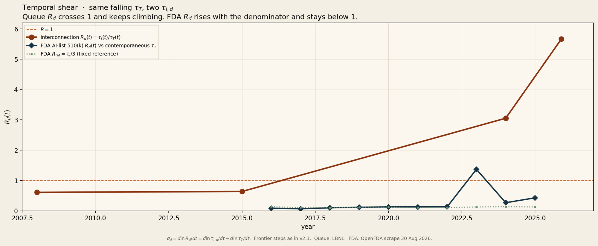
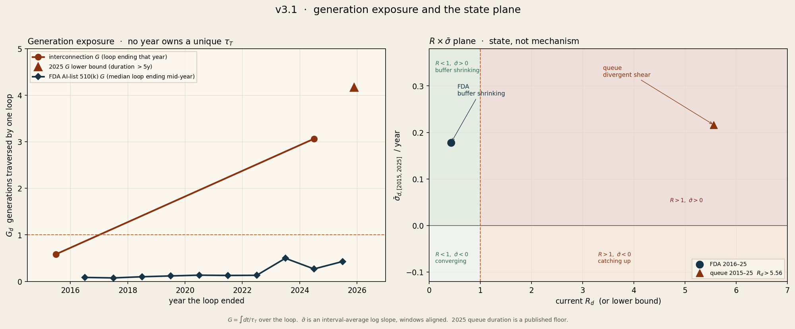
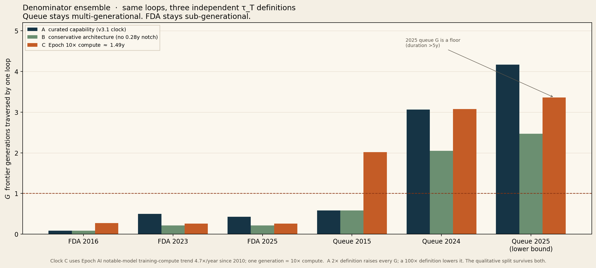

A field note and a commissioning report. Not a forecast. Not a survey. Two loops, three clocks, numbers you can rerun.
1. What this measures, and what it claims
The essay argues that the interval between meaningful AI advances is now shorter than the response time of many human institutions. This document is where that argument goes to get hurt.
I spent seventeen years commissioning industrial systems, the discipline of proving, with instruments and signed test records, that a thing does what its designers claim before anyone is allowed to depend on it. This is that discipline pointed at a different machine: the loops institutions run, reviews, queues, approvals, measured against the clock of frontier AI progress.
Two systems are under test. Three instruments do the measuring. One sentence at the end states everything the measurements license, and nothing more.
2. The instruments
Three quantities, each introduced the same way: why it exists, what it is, and a toy example you can check in your head.
2.1. R, the clock ratio. Why: the simplest possible question is "how much longer is the institution's loop than the frontier's current generation?"
R_d(t) = τ_I,d(t) / τ_T(t)
where τ_I,d is the duration of one institutional loop in domain d, and τ_T is the length of a contemporaneous frontier generation. Toy example: if a permit takes 2 years and a frontier generation is currently 1 year, R = 2. R is only defined when a contemporaneous frontier interval actually exists, no back-projecting today's cadence onto 2008.
2.2. G, generation exposure. Why: R has a flaw, it forces you to pick one denominator for a loop that may have lived through several. A five-year wait didn't experience one cadence; it experienced every cadence regime that passed while it ran. G fixes this:
G_d(t₀, t₁) = ∫_{t₀}^{t₁} du / τ_T(u)
In plain language: count how many frontier generations elapsed while this one loop ran. If τ_T is constant, G = R. If τ_T is represented as a step function, as Clock A is here, G becomes a sum of fractions:
G = Σ (time the loop spent inside step i) / (duration of step i)
Toy example: a 2-year loop that spends its first year inside a 2-year generation and its second year inside a 0.5-year generation accumulates G = 1/2 + 1/0.5 = 0.5 + 2 = 2.5 generations. Notice G weights recency correctly and no calendar year ever "owns" a cadence.
2.3 - σ̄, average shear. Why: R and G are snapshots. The strategic question is whether the mismatch is growing or closing. Average shear over a window [a, b] is the drift rate of the log ratio:
σ̄_{d,[a,b]} = Δ ln R_d / Δt = (Δ ln τ_I,d − Δ ln τ_T) / Δt
Sign convention: positive shear means the institutional loop is losing ground against the frontier clock, which reads as loss of margin while R < 1, and as compounding divergence once R > 1. Numerator and denominator always use the same window; averaging replaces any attempt to differentiate a step function. Quadrant labels on the state plane are shorthand for net direction over the measurement window, not the instantaneous sign in August 2026.
3. The frontier clock (and its known weakness)
The primary clock (Clock A) is a curated capability lineage with these step durations, dated to public releases:
| From | To | Opened | Closed | Duration |
|---|---|---|---|---|
| AlexNet | Transformer | 2012.75 | 2017.45 | 4.70y |
| Transformer | GPT-3 | 2017.45 | 2020.41 | 2.96y |
| GPT-3 | ChatGPT | 2020.41 | 2022.91 | 2.51y |
| ChatGPT | GPT-4 | 2022.91 | 2023.20 | 0.28y (the notch) |
| GPT-4 | o1 | 2023.20 | 2024.70 | 1.50y |
| o1 | GPT-5 | 2024.70 | 2025.60 | 0.90y |
Clock A is evaluated through 7 August 2025 (GPT-5). The post-GPT-5 interval is not assigned a duration in this version. 2025 loops use a mid-year convention (end = 2025.5), which falls before GPT-5, so every 2025 integral below is fully inside the table.
Every quantity above inherits this clock, and a curated lineage is exactly where a critic should attack. Section 7 attacks it first, with two alternative clocks, including one built from measured compute rather than named models. Hold the objection until then; it's the report's own final test.
4. Experiment 1, the grid interconnection queue
System under test: the time from interconnection request (IR) to commercial operation date (COD) for new US power plants, the loop that gates the energy this entire acceleration runs on.
Data. Lawrence Berkeley National Laboratory's Queued Up series. Typical (reported) duration from IR to COD: 22 months for projects reaching COD in 2008; 36 months (3.00y) in 2015; 55 months (4.58y) in 2024. For projects built in 2025, LBNL reports the median IR→COD duration as over 5 years, for the regions with available data. The 2025 figure is treated here as a published floor, not a point estimate.
Procedure. G, worked. 2025 loops use the same mid-year convention as FDA: a representative project reaching COD at 2025.5. Duration is a published floor, >5 years, so t₀ < 2020.5. Walk the five completed years 2020.5 → 2025.5 through Clock A: 2.41y inside the 2.51y GPT-3→ChatGPT step (2.41/2.51 = 0.96), the full 0.28y notch (fully contained, so exactly 1.00, a whole generation on its own), the full 1.50y GPT-4→o1 step (1.00), and 0.80y inside o1→GPT-5 (0.80/0.90 = 0.89). Sum: G > 3.85. That is a lower bound on duration. If the same five-year floor is instead ended on the last Clock A date we can score (GPT-5, 2025.60), G > 3.92. If it is ended on 1 January 2025, G > 3.51. The curated-clock 2025 queue is multi-generational on the whole range; it is not "more than four" under the mid-year convention. The earlier >4.17 figure assumed a late-2025 endpoint and an o1 step still open in August 2026. That assumption is retired.
Procedure - σ̄, worked. Same window on both sides, 2015–2025. Numerator: ln(5/3) / 10y = 0.051/y (and >, per the floor). Denominator: the frontier step fell 4.70y → 0.90y across the same decade: ln(0.90/4.70) / 10y = −0.165/y. Shear:
σ̄_queue,[2015,2025] > 0.051 − (−0.165) = +0.216 / year
Result: more than three frontier generations, nearly four under the mid-year convention, now pass while one power plant waits to connect. The wait is lengthening while the frontier accelerates, so the mismatch compounds on both ends.

What would falsify it: completed-project medians falling toward one frontier generation and staying there.
5. Experiment 2. FDA review of AI medical devices
System under test: the median 510(k) review time for AI-enabled medical devices, a high-stakes paper loop, chosen as the adversarial counterweight: if every institution were drowning, this one should be drowning fastest, because its workload exploded.
Data. OpenFDA complete 510(k) dump, exported 26 August 2026 (175,879 records; 175,763 with usable receipt and decision dates). AI flag: submission number present on FDA's public AI-Enabled Medical Devices list, scraped 30 August 2026 (1,466 K-numbers; 1,466 matched). AI-tagged 510(k) decisions rose from 17 in 2016 to 329 in 2025. Median receipt→decision: 148d (2016) → 121d (2022) → 140d (2023) → 147d (2024) → 141d (2025). 2026 is year-to-date through the dump date (89 AI-tagged decisions, median 128d) and is not used in the shear window. FDA states that the AI-enabled list is not comprehensive; this is their tagged set, not a claim that every AI device is on it.
Published checks on nearby numbers, not used as inputs: Almarie et al. report a 2024 median of 151 days for ML-enabled 510(k)s; Innolitics reports a 2025 median of 142 days for AI/ML 510(k)s. The scrape values for those years are 147d and 141d. Full citations in §10.
Procedure. G, worked on the most delicate case. The 2023 median loop is 140 days ending mid-year: decision 1 July, submission ~11 February. The GPT-4 notch (0.28y) ran 30 November 2022 → 14 March 2023. Overlap with the loop: 11 February → 14 March = 31 days = 0.085y, contributing 0.085 / 0.28 = 0.30 generations. The remainder, 14 March → 1 July = 109 days = 0.298y, sits in the 1.50y step: 0.298 / 1.50 = 0.20. Total: G ≈ 0.50. This is why no calendar year owns a τ_T, the notch counts only for the 31 days this loop actually lived inside it.
A 141-day 2025 loop ending mid-year lives entirely inside the 0.90y step: G ≈ 0.43.
Procedure - σ̄, worked. Same window on both sides, 2016–2025. Numerator: ln(141/148) / 9y = −0.005/y, the loop got slightly faster. Denominator: same frontier drop over nine years: −0.184/y. Shear:
σ̄_FDA,[2016,2025] ≈ −0.005 + 0.184 = +0.178 / year
Result: a typical 2025 AI 510(k) consumes 0.43 generations, sub-generational, under a 19× workload increase. But shear is positive: the loop is holding its absolute speed while the frontier accelerates underneath it. It is keeping pace the way a runner keeps pace with an accelerating train, by not slowing down, yet. Positive shear here is loss of margin, not failure.
What would falsify its classification: medians lengthening past one contemporaneous generation (G crossing 1).
6. The state plane, reading both experiments at once
Two numbers per system, where it sits (R) and which way it's drifting (σ̄), give a plane with four states:
| σ̄ < 0 (mismatch net closing over the window) | σ̄ > 0 (mismatch net growing over the window) | |
|---|---|---|
| R < 1 (inside one generation) | comfortably converging | buffer shrinking: FDA is here |
| R > 1 (multi-generational) | behind, net catching up over the window | divergent shear: the queue is here |
FDA: R(2025) ≈ 141d / 0.90y ≈ 0.43, σ̄ ≈ +0.18/y, losing margin inside the safe half-plane. Queue: R > 5y / 0.90y > 5.56, σ̄ > +0.22/y, compounding mismatch in the unsafe half-plane. One instrument panel, two very different machines.

Mechanism (why a loop behaves as it does) is a separate taxonomy from state (where it sits today): compressible or low floor; sticky floor; numerator worsening; frontier stabilization. This report locates two systems. It does not claim to have mapped the categories.
7. Robustness, attacking the denominator
The numerators survived. The weakest remaining beam is the clock itself: what counts as one comparable generation? Rather than defend one sacred lineage, rerun everything on three materially different definitions.
Clock A, curated capability (§3). The clock that makes G interesting, and the easiest to accuse of cherry-picking.
Clock B, conservative, constructed. Same early steps, but ChatGPT-through-o1 collapsed into a single 1.79y generation, no notch, and cadence held at 1.80y after o1 by construction. Not an estimate of an unfinished interval, a deliberately slow sensitivity model. G_B is exact given that specification.
Clock C, measured compute, external. No named models at all. Epoch AI's notable-model dataset has training compute growing 4.7× per year since 2010 (90% CI 4.3×–5.2×). Define one generation as a 10× compute increase:
τ_C = ln(10) / ln(4.7) ≈ 1.49 years, constant after 2010.
This is the first denominator in the trail built from a measured increment rather than a judgment call. Compute increments and capability increments are cousins, not twins.
Results, all three clocks:
| Loop | G on A | G on B | G on C |
|---|---|---|---|
| FDA median, 2016 | 0.09 | 0.09 | 0.27 |
| FDA median, 2023 | 0.50 | 0.21 | 0.26 |
| FDA median, 2025 | 0.43 | 0.21 | 0.26 |
| Queue, 2015 | 0.59‡ | 0.59‡ | 2.02 |
| Queue, 2024 | 3.06† | 2.05 | 3.08 |
| Queue, 2025 (mid-year, >5y) | >3.85 | >2.40 | >3.36 |
‡ The 2015 queue loop begins mid-2012, slightly before Clock A opens at AlexNet (2012.75) — its A/B values are partial observable exposure from clock start, per the no-back-projection rule. Clock C starts in 2010 and scores the full loop.
† The 2024 queue row retains the v3.1 late-year endpoint convention; under the mid-year convention it computes ≈ 3.03. Neither value affects any classification.
The 2023 FDA "spike" exists only on Clock A, it is the notch, and the classification never needed it. On every specification: the 2025 queue is multi-generational, the 2025 FDA review sub-generational. The most favorable queue value against the least favorable FDA value still differ by a factor of ≈5.6 (≈13 on Clock C). The systems are not perched on G = 1.

Sensitivity inside Clock C, worked. Let K be the compute multiple defining a generation, so τ_C = ln K / ln 4.7. Because the 2025 queue duration is a published floor (>5y), what happens at τ_C ≥ 5y (K ≥ 4.7⁵ ≈ 2,293×) is that the observed floor stops guaranteeing G > 1. It does not prove G < 1. The FDA classification (G < 1) fails only when τ_C ≤ 141/365.25 ≈ 0.386y, i.e. K ≤ 4.7^{0.386} ≈ 1.82×. Inside ≈ 1.82× < K < ≈ 2,293× the floor still guarantees the simple split. A hundred-fold jump is not enough to kill the guarantee.
A 2× generation at 4.7×/year is 0.45y, not 0.50y; "doubling every six months" is the slogan, not the derived interval. That 2× definition still leaves FDA at G ≈ 0.86 and the queue at G > 11. A 100× definition still leaves the queue at G > 1.68.
Propagating Epoch's regression CI (4.3×–5.2×/yr) through the 10× definition: τ_{10×} ≈ 1.40–1.58y, so G_queue,2025 > 3.17–3.58 and G_FDA,2025 ≈ 0.245–0.276. The band is tight relative to the gap.
Clocks A and B are not independent measurements. They share an early lineage; B is a conservative modification of A. Clock C is the external proxy.
8. Acceptance criteria, hypotheses built to lose
H0, generalized overload, "institutions slow down when workload rises." FDA's tagged AI 510(k) workload rose 19×; its median fell 7 days. Fails.
H1, uniform decoupling, "every domain is already multi-generational." FDA sits at G ≈ 0.43 on Clock A and lower on B and C. Fails.
H2, differentially compressible floors, different domains exhibit differently compressible operating floors; mismatch grows where a floor compresses more slowly than frontier cadence. Every loop has a floor, τ_I,d(t) ≥ F_d(t); floors can fall (modular construction, robotics, automated permitting, AI-assisted review); mismatch grows specifically where frontier cadence compresses faster than the relevant floor can. "Atoms versus paper" is shorthand for the real variables: physicality, coordination depth, irreversibility, dependencies, queues, labor, validation, regulatory burden. Survives, so far. It dies if completed atom-loops reach and hold R < 1 on the live capability clock, or if fast paper loops turn out to be fast for the wrong reasons (see §9, item 1, this is the program's own next test).
9. Deficiency list, what this report does not establish
- Speed is not adequacy. G measures whether a loop keeps pace, not whether its output still means what it meant. A predicate-based review can stay fast by examining less per unit of novelty. A depth-per-generation companion quantity is future work, and until it exists, the FDA result reads "keeping up on the clock", nothing more.
- Clock C measures inputs, not capability. Compute increments and capability increments are cousins, not twins. A true capability-threshold series remains unsolved (benchmark contamination, suite churn, jaggedness).
- Two loops is an existence proof, not a survey. The claim is that the split exists, not that these two systems represent their categories. The loop portfolio (permitting, licensing, standards bodies, clinical pathways, spectrum, courts) is the program's next stage.
- Product-release cadence is refused as a clock (51-day means, weekly drops): it would make every loop multi-generational by construction, which is how you manufacture a conclusion.
- Standing refusals: no derivatives of step functions · no mixed windows · no unique τ_T per calendar year · no point estimates for published floors · no merged announce/construction clocks · no "civilizational decoupling" claimed from two systems.
10. Attestation and sources
In commissioning, a test record ends with what was measured, with which instruments, by whom, and what remains open. Same here.
FDA loop
- U.S. Food and Drug Administration, AI-Enabled Medical Devices list, https://www.fda.gov/medical-devices/software-medical-device-samd/artificial-intelligence-enabled-medical-devices. HTML table scraped 30 August 2026; 1,466 unique 510(k) submission numbers (K-numbers). FDA states the list is not comprehensive.
- openFDA, Device 510(k) dataset, complete partition
device-510k-0001-of-0001.json.zip, export date 26 August 2026, 175,879 records. https://download.open.fda.gov/device/510k/. Duration =decision_date−date_received; records with missing dates or durations outside 1–2000 days dropped (175,763 dated). Join key:k_number. - Nearby published checks, not used as inputs. Bassel Almarie, Luis Fernando Gonzalez-Gonzalez, Lucas Antônio dos Santos Barbosa, Amelie Lutz, Ulrich Grosse, and Felipe Fregni, "Machine Learning-Enabled Medical Devices Authorized by the US Food and Drug Administration in 2024: Regulatory Characteristics, Predicate Lineage, and Transparency Reporting," Biomedicines 13, no. 12 (2025): 3005, https://doi.org/10.3390/biomedicines13123005. Median review 151 days among 2024 ML-enabled 510(k)s (162 days all Class II pathways). Yujan Shrestha, "2025 Year in Review: AI/ML Medical Device 510(k) Clearances," Innolitics, 20 December 2025, https://innolitics.com/articles/year-in-review-ai-ml-medical-device-k-clearances/. Median 142 days among 295 AI/ML clearances in 2025. Scrape values for those years: 147d and 141d.
Queue loop
- Joseph Rand, Nick Manderlink, Steven Zhang, Chris Talley, Will Gorman, Ryan Wiser, Joachim Seel, Julie Mulvaney Kemp, Seongeun Jeong, and Fredrich Kahrl, Queued Up: 2025 Edition, Characteristics of Power Plants Seeking Transmission Interconnection As of the End of 2024, Lawrence Berkeley National Laboratory (2025). Typical project built in 2024: 55 months IR→COD; 36 months in 2015; 22 months in 2008. https://emp.lbl.gov/queues
- Joseph Rand, Anna Cheyette, Chris Talley, Steven Zhang, Will Gorman, Ryan H. Wiser, Joachim Seel, Seongeun Jeong, and Fredrich Kahrl, Queued Up: 2026 Edition, Characteristics of Power Plants Seeking Transmission Interconnection As of the End of 2025, Lawrence Berkeley National Laboratory (2026). Median IR→COD over 5 years for projects built in 2025, regions with available data. https://emp.lbl.gov/queues
Compute trend
- Epoch AI, "The training compute of notable AI models has been doubling roughly every six months," data insight, log-linear fit on notable models after 2010: 4.7× per year, 90% CI 4.3×–5.2×, R² = 0.60. Dataset snapshot referenced by Epoch as updated 24 November 2025. https://epoch.ai/data-insights/compute-trend-post-2010
Clock A dates (public releases, not original research)
- AlexNet: Krizhevsky, Sutskever, Hinton, ILSVRC 2012 (dated here 2012.75).
- Transformer: Vaswani et al., "Attention Is All You Need," 12 June 2017 (2017.45).
- GPT-3: Brown et al., 11 June 2020 (2020.41).
- ChatGPT: OpenAI public launch, 30 November 2022 (2022.91).
- GPT-4: OpenAI, 14 March 2023 (2023.20).
- o1-preview: OpenAI, 12 September 2024 (2024.70).
- GPT-5: OpenAI, 7 August 2025 (2025.60). Clock A stops here. The post-GPT-5 interval is not scored.
Reproducibility. All arithmetic in this document is reproducible from those public sources and the step durations in §3. No private data is used. Worked examples in §§4–5 and 7 are the actual computations, not illustrations. Year-fraction convention: month ≈ 1/12 of a year; 141 / 365.25 = 0.386y.
Version trail. v3 introduced the data scrape, hypotheses, and σ. v3.1 corrected five named errors and introduced G and the state plane. v3.2 attacked the denominator. v4 is this publication restructure. A pre-publication correction puts GPT-5 on Clock A, scores 2025 loops at mid-year, and retires the late-2025 G > 4.17 figure that assumed an o1 step still open in August 2026; a review pass corrected the notch's contribution to exactly 1.00 for fully-contained steps (G > 3.85). Prior versions are preserved unedited. Errors found after publication will be fixed forward, in public, the same way.
Independence disclosure. Clocks A and B share an early lineage; B is a conservative modification of A. Clock C is external. The author is not affiliated with FDA, LBNL, or Epoch AI.
11. The licensed sentence
The distances are shrinking. Some of the systems standing under them are not. One of the load-bearing ones is getting slower. Some of the paper loops are still closing. Across three materially different frontier-clock definitions, a five-year connection wait traverses more than two, and on the curated clock, under a mid-year convention, more than three and nearly four, reference generations; a typical AI 510(k) review remains below half of one.
On the compute-based clock, that multi-versus-sub-generational classification survives generation definitions spanning approximately 1.8× to more than 2,000× training-compute increments.
And the consequence that prices the essay's engineering rule: G also scores a planned implementation. G > 1 over a project's life is the quantified version of "architecture half-life shorter than the implementation cycle", the architecture must survive more than one frontier generation before it ships. G ≫ 1 is a continuous migration program wearing a project-management costume.
The pen drew one curve. The work is measuring which layers of reality can bend with it.